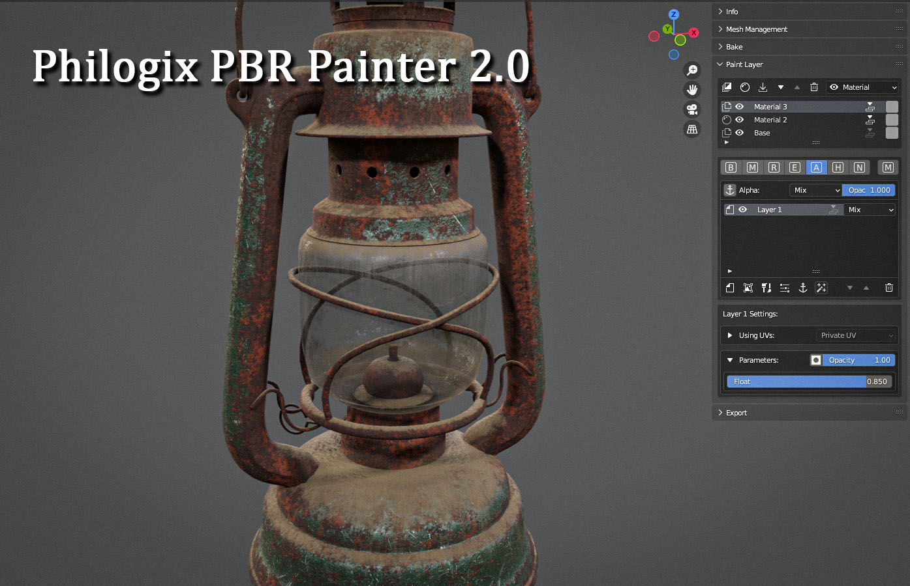

Philogix PBR Painter 2.0 for Blender

Introduction
Philogix PBR Painter is a 3D painting add-on allowing you to texturing and exporting PBR texture for your 3D meshes. This documentation is designed to help you learn how to use this add-on, from basic to advanced techniques. If you have any question that is not answered in this manual feel free to ask on our Discord.
Philogix PBR Painter 2.0 - Professional Texturing in Blender!
Enjoy this experience with us!